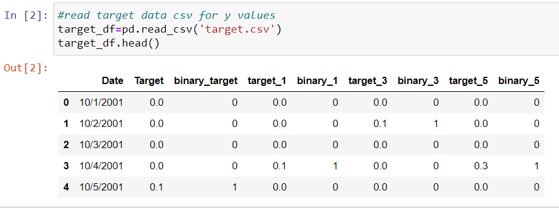
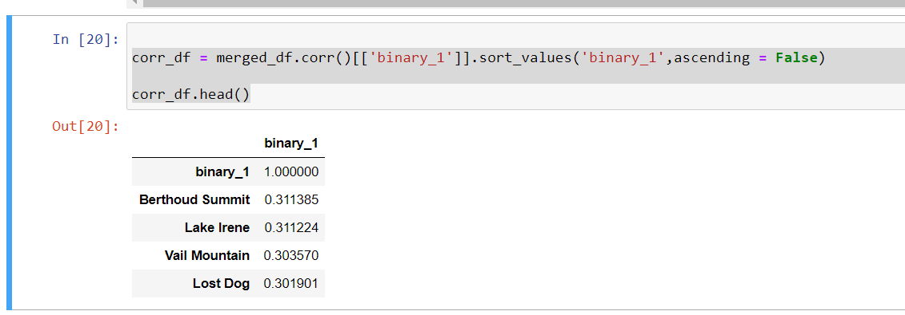

Obtaining Data
I examined numerous potential sources of data to train my weather Predicting
models. Based on my anecdotal experience, I suspected that wind (particularly directions)
and barometric pressure could play a crucial role in prediction.
Suprisingly, historical baromotric presssure data was exceedingly difficult to find.
Ultimately I decided to turn back to the same source of data I used in my first attempt
at snowfall prediction, the Snotel network of automated weather stations.
I utilized the report generator at https://wcc.sc.egov.usda.gov/reportGenerator/
to select all snotel stations over an elevation of 7,000 feet above sea level.
I created a CSV file of daily precipitation increments from October 1st, 2001
Until March 1st 2021 for 504 individual weather stations across the western United States.
My attempt then became to predict probability of precipitation (ppp) of a specific point based on historical
relationships amongst western US mountain ranges. (At the target location, Loveland Ski Area, it is to be assumed
precipitation that falls between October and May/June (or possibly another month) will be in the form of sweet Colorado powder, ot atleast heavy spring snow. )
Data exploration and preparation
I began by preparing my target data. Daily precipitation increments from the target location were offset by 1,3 and 5 days to allow for
forecasting and then encoded as a 1 (precipitated) or 0.

I then merged the snotel precipitation data on date.
I then created a second dataframe with station metadata, including latitude and longitude and ran the correlation between each stations daily precipitation (or not)
and the 1 day offset target result.

I then used plotly to plot the location of each station, along with correlation represented with color and size. (below visualization is interactive)
The highest correlation to a 1 day forecast occur in mainly in Colorado and Utah
With such large overlap I then deleted all stations with missing data reducing the set to 209 stations with complete records.
Finally I merged the closest full automated weatherstation to the target, Soda Creek RAWS station to get additional weather data such as Wind speed, direction, solar radiation,
relative humidity temperature and day of year (for seasonal corrrelation)